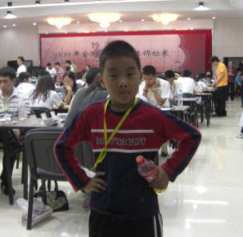
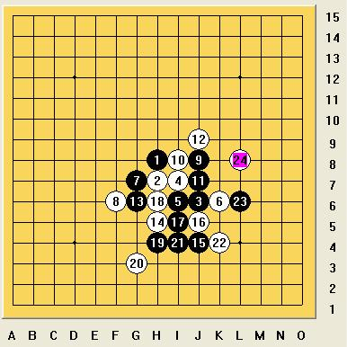

少儿棋手介绍——戴宇轩
#1 少儿棋手介绍——戴宇轩作者：黄药师 发表时间：2010-6-7 8:58:59



戴宇轩，一级棋手，浙江台州少儿选手。
2009浙江赛儿童组第2名，2009全国少年儿童五子棋锦标赛儿童男子组第4名，参与过两次全国五子棋团体赛，大赛经验多，擅长瑞星开局。
2009年5月28日，戴宇轩(7岁)与全国五子棋团体锦标赛，在与成年队的较量中，不畏强手、敢打敢拼，在34支参赛的代表队中积3．5分/排名27，参赛年龄最小的戴宇轩接受了北京电视台的专访。
2012年全国少年儿童五子棋锦标赛儿童男子甲组第一名
［ 茗弈小刀 于 2010-6-7 12:41:46 时奖励此帖[金币加 20 威望加1］［此帖子已被 黄药师 在 2012-11-3 23:26:23 编辑过］
#2 Re:少儿棋手介绍——戴宇轩作者：茗弈小刀 发表时间：2010-6-7 12:43:56
#3 Re:Re:少儿棋手介绍——戴宇轩作者：茗弈小刀 发表时间：2010-6-7 12:45:18
#4 Re:少儿棋手介绍——戴宇轩作者：黄药师 发表时间：2010-6-7 14:23:00
ShowPost.asp?ThreadID=6680
今天应小刀之请写小刀与罗罗一局对弈的棋评；
疏星开局小刀执黑，五手选定后白6避开通常J8，以及同强的G6，选定K6，应该可以一战，第9手之后个人认为应该是黑中盘略优的局势，但也势必是个较难的局面。然而对局中白14选于H5败，之后黑轻松运用vct手段至23成双杀取胜。此局对弈时间极短，盘面落子也不到30手。因此以下就最主要两个问题分析。
第一个问题，对白子极为关键的14，黑13落定防白活三又自成一活二，于右侧有很好的衔接，之后攻势尤显，白14何以败，想必不用多讲，关键我们可以考虑到这个局面之后14该如何应对。白14必须做到限制黑子的子力连接使其难以成杀，又要不失自身的积极性。白14应当是极为关键的而又需冷静应对的一手！因此就不可避免的来算黑子的vct取胜手段，因此也引出了一个对弈中较为关键的问题，计算的准确性以及时间性。就这点而言个人认为网战短短15分的对局，从某种程度讲还是对真正热衷五子棋的朋友而言还是很有考验价值的。
第二个问题，我们回到白第10手的应对上，从防守的积极性考虑这个10应该较弱的一个选点。谈到防守积极性，也就又回到了计算力这一层次上来了。要有较深的计算，我们才能做到较为积极的防守。从本局可见，五子棋对局的计算力的重要性，进一步应该说是计算的效率性。补充一点本局的10应该还反映了棋手对于一个局面的熟悉性，虽然我们不可能熟悉每一个局面，但是当遇到一个新局面，赛后我们应当积极分析、拆解。（这方面本人有很深的体会和教训，虽然下棋几年，但期间断断续续，至今也就停留在CN水平）。希望各位热衷五子棋的朋友，在五子棋的路上奋勇先前，虽然这其中也必有些艰辛，但请坚信欢笑总比苦涩多！希望我们在五子棋的道路上没遗憾，也希望在人生的道理上没遗憾！
［此帖子已被 黄药师 在 2010-6-7 14:25:06 编辑过］
#5 Re:少儿棋手介绍——戴宇轩作者：白衣神童小剑魔 发表时间：2010-6-8 3:23:05
这张小盆友笑的最开心，左边的胖胖墨镜男肯定是个孩子王
［此帖子已被 白衣神童小剑魔 在 2010-6-8 4:01:25 编辑过］
［此帖子已被 白衣神童小剑魔 在 2010-6-8 4:03:17 编辑过］
#6 Re:少儿棋手介绍——戴宇轩作者：龙小小 发表时间：2010-6-8 21:32:23
好可爱的DD
#7 Re:少儿棋手介绍——戴宇轩作者：周光乐 发表时间：2010-6-19 12:20:40
e .........................ku le
［此帖子已被 周光乐 在 2010-6-19 13:31:55 编辑过］
#8 Re:少儿棋手介绍——戴宇轩作者：黄药师 发表时间：2010-8-14 20:52:46
目前三连胜 本届比赛 儿童男子组夺冠热门之一。
#9 Re:少儿棋手介绍——戴宇轩作者：一刀骈死你 发表时间：2010-8-15 22:29:21
唔，这位DD下的还满不错的嘛#10 Re:少儿棋手介绍——戴宇轩作者：黄药师 发表时间：2010-8-16 22:32:20
2盘和棋，一盘输了，基本告别冠军！#11 Re:少儿棋手介绍——戴宇轩作者：黄药师 发表时间：2012-11-3 23:28:03
已经更新今年全少赛战绩